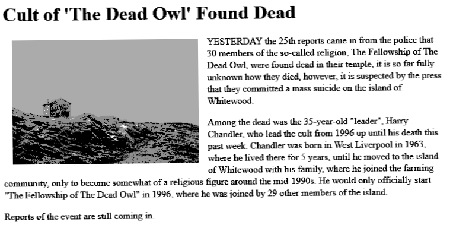
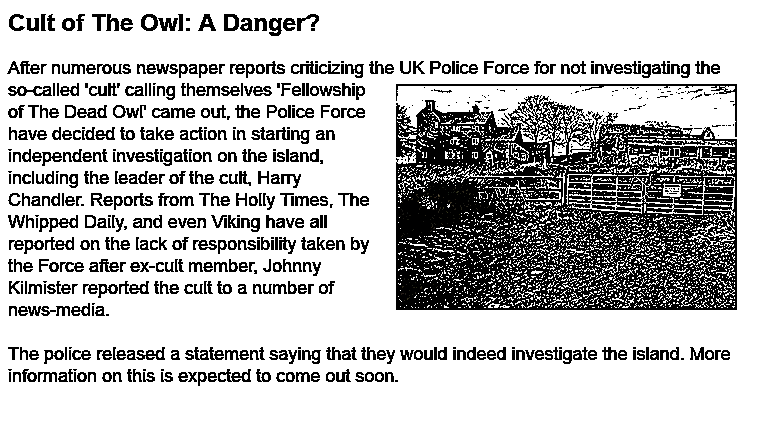
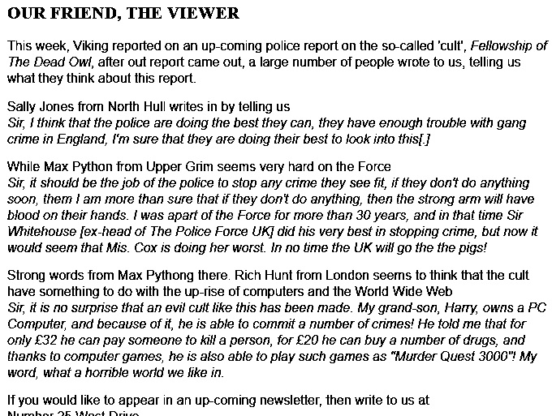

News Reports on The Cult
A small number of news reports have been found over the
years, most of the reports were made after the cult's
suicide, here are all of the once that we have found.
Our first report is a clipping from an
unknow UK newspaper, it is dated as the 26 of November
1998. The report uses one of the only known images of the
island that was taken by the police at the time.
We would like to thank a fello friend on AIM who sent us
this report from The Holly Times, a UK newspaper that
reported on the cult in 1997...
Worry As Cult Takes Over Whitewood
Last year the island of Whitewood was a simple farmland
community, but as reports have come in from a former
member of the island, not everything is what it seems to
be...
Johnny Kilmister reported to The Holly Times yesterday
that on the island of Whitewood, there is a so-called
"cult" that believe that Jesus Christ will return to the
earth in the coming years. Kilmister told us that the
leader (who will not be named in this report for privacy
reasons) first started to gain a following in late 1995
and would soon start a new-wave-Christian cult that is
known as 'The Fellowship of The Dead Owl'. They would
practice satanic rituals while playing heavy metal
albums.
While the cult would practice their ritual they would
speak about a pure Great Britain. Kilmister would tell
us that they also believed that the UK would be ruled by
a new leader called "The Midnight Prowler" in the year
2014.
when asked about this, the head of Police Force UK told
us that the island was "no worry" to us.
The next report comes in from a close friend of mine who
also my interest in this event. This report comes in from
Viking, a paper that was published in the UK from 1907 to
2000, this report was made sometime around mid April 1997.
The next clipping also comes rom Viking, it is dated as
late April 1997.

|